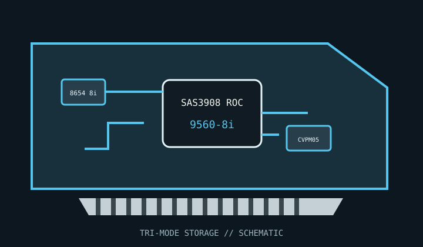

[ INDIVIDUAL COMPONENT // STORAGE / DISK I/O ]
Broadcom MegaRAID 9560-8i
Eight internal Tri-Mode lanes combine SAS/SATA RAID with NVMe support through supported tri-mode cabling and backplanes.

MODEL SCOPE: MegaRAID 9560-8i. Verify exact board revision, CacheVault accessory, firmware package, cable kit and platform qualification.
Reference specifications
| Controller | Broadcom SAS3908 Tri-Mode RAID-on-Chip. |
|---|---|
| Host bus | PCI Express 4.0 x8. |
| Ports | Eight internal lanes on one SFF-8654 8i SlimSAS connector. |
| Protocols | SAS 12 Gb/s, SATA 6 Gb/s and NVMe over PCIe through supported Tri-Mode topologies. |
| RAID / HBA mode | MegaRAID hardware RAID 0, 1, 5, 6, 10, 50 and 60, plus supported JBOD/raw-device operation. |
| Cache / protection | 4 GB onboard cache with CacheVault flash-backed protection using the compatible CVPM05 module. Verify installed protection hardware before write-back use. |
| Firmware / OS | Use Broadcom's model-specific MegaRAID firmware and StorCLI / management tools with a listed Windows, Linux or VMware driver version. Do not flash HBA firmware onto a RAID SKU. |
| Drive / backplane caveats | NVMe is not carried through a SAS expander; use a compatible tri-mode backplane and matched cable map. Validate SAS/SATA/NVMe drive support and server firmware together. |
Compatibility and service notes
- SFF-8654 physical fit does not establish the correct cable pinout or supported drive protocol routing.
- CacheVault presence and health determine safe write-back operation; follow Broadcom guidance if protection is absent or degraded.
- Record firmware, array layout and CacheVault module identity before maintenance or controller replacement.
Sources & further reading
- Broadcom — MegaRAID 9500 PCIe Gen 4.0 Tri-Mode Storage Adapters Product BriefOfficial product brief for the family, including the MegaRAID 9560-series adapters.
- Broadcom — 95xx PCIe 4.0 MegaRAID and HBA Tri-Mode Storage Adapters User GuideManufacturer installation, configuration, firmware and cabling reference.
- Broadcom — MegaRAID 95xx Tri-Mode drive compatibility reportOfficial drive and topology qualification reference.